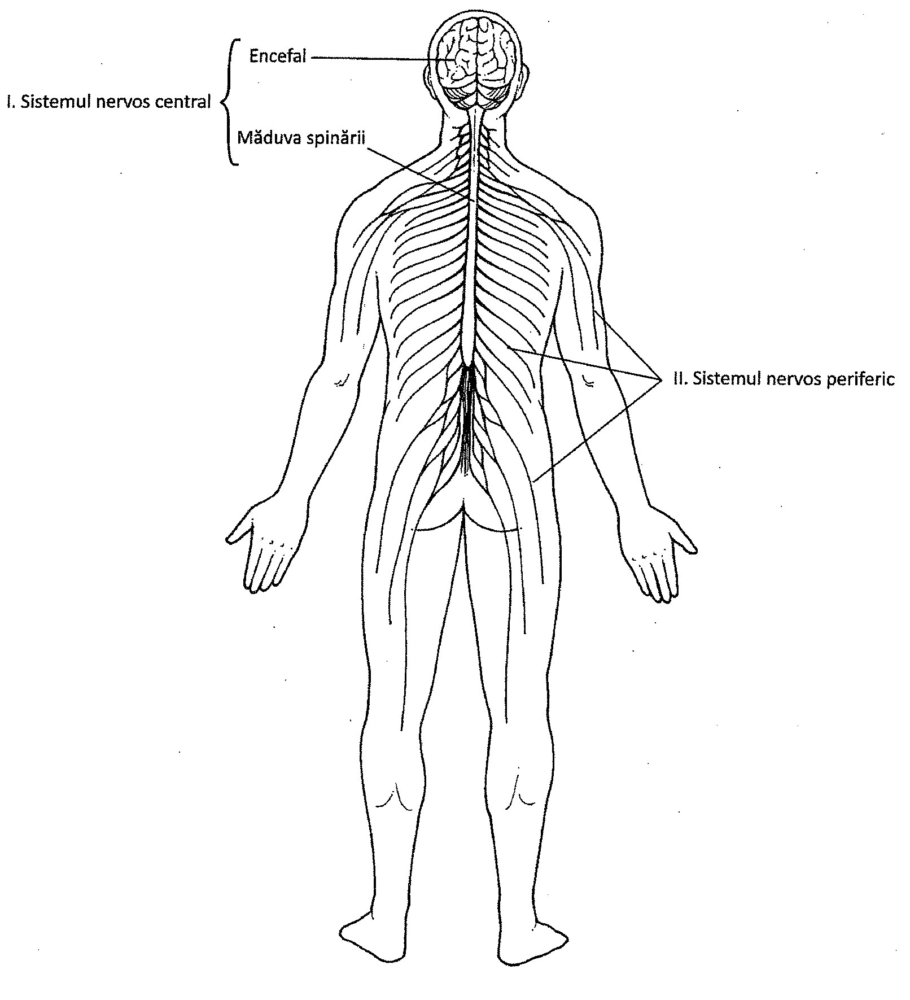
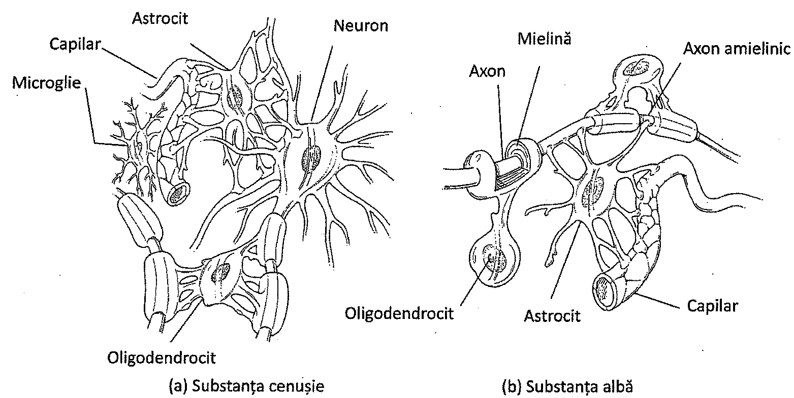
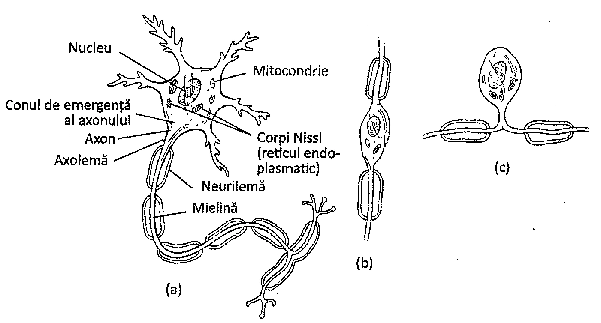
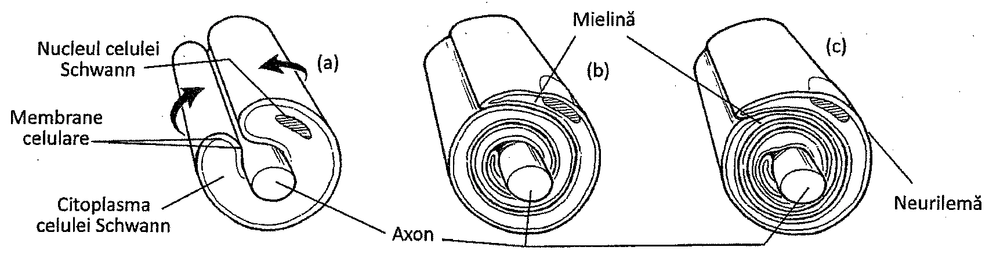
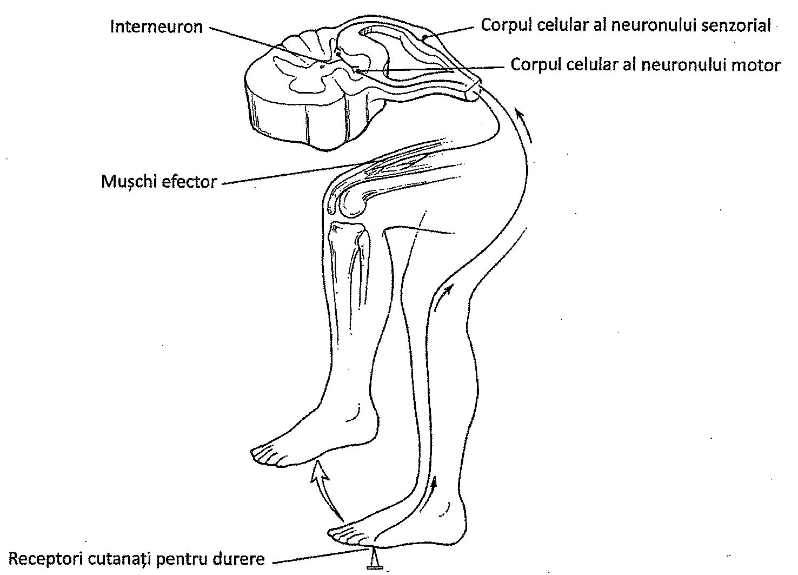
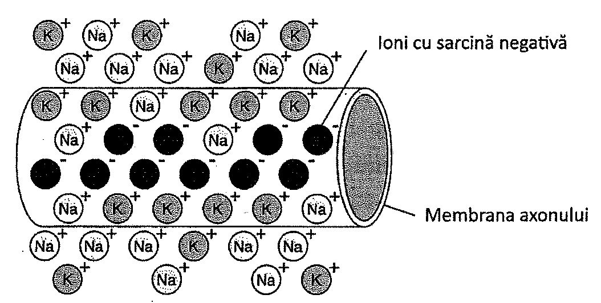
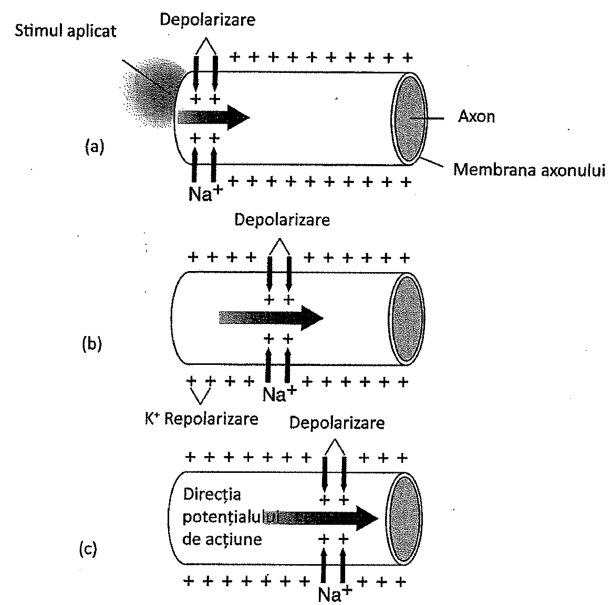
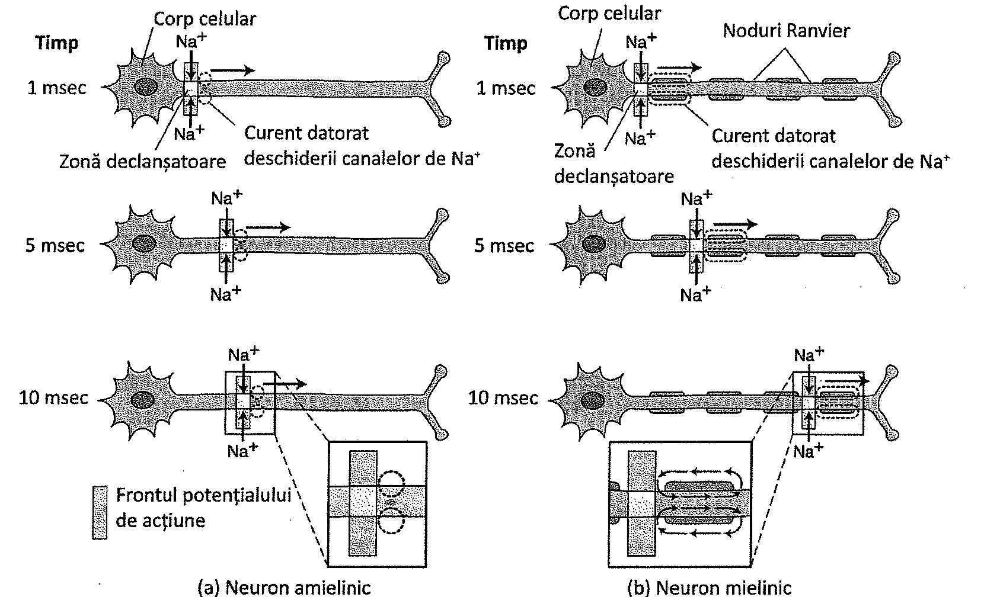
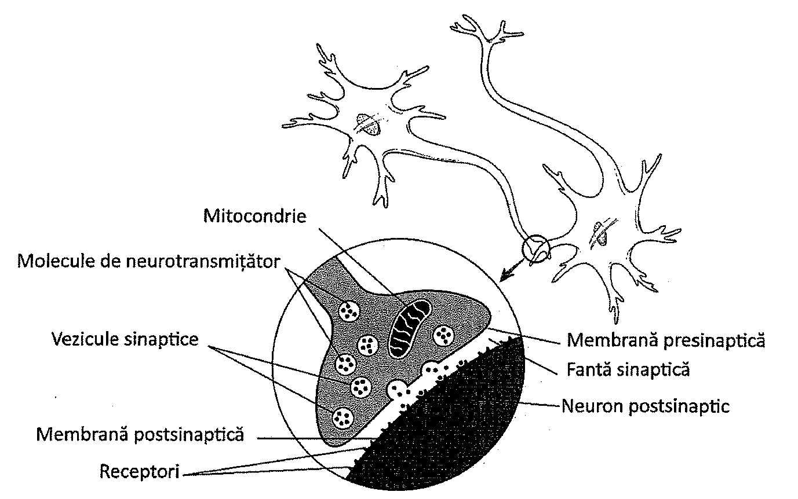

10.1. Organizarea și celulele sistemului nervos
Sistemul nervos coordonează procesele complexe ce au loc în mediul intern al organismului. De asemenea, acest sistem asigură integrarea organismului în mediul extern. În acest sens, sistemul nervos facilitează văzul, auzul, gustul sau simțul tactil, și răspunde la stimuli. Fără sistemul nervos, celelalte sisteme ale organismului ar funcționa haotic, independent unele de altele, fără legătură cu nevoile organismului. De exemplu, mușchii nu s-ar mai contracta în mod organizat, temperatura corporală nu ar mai fi reglată, sângele nu ar mai fi distribuit în funcție de nevoile tisulare, iar procesele cognitive și emoțiile nu ar mai exista.
Organizarea sistemului nervos
Sistemul nervos are două componente principale: sistemul nervos central (SNC) și sistemul nervos periferic (SNP). SNC este compus din encefal și măduva spinării și servește drept centru de control al întregului organism (Figura 10.1). Anumite componente ale SNC integrează informațiile primite și determină reacțiile adecvate.
SNP-ul este alcătuit din receptorii aflați în organele de simț și nervii prin care intervin în comunicarea dintre SNC și organele de simț. SNP-ul conține 12 perechi de nervi cranieni și 31 de perechi de nervi spinali. El informează SNC despre modificarea condițiilor din interiorul organismului și de la suprafața acestuia, iar ulterior transmite răspunsul SNC către mușchi sau glande, care vor ajusta aceste condiții.
SNP conține două tipuri de nervi, nervi motori și nervi senzoriali. Nervii senzoriali sau aferenți (însemnând „înspre”) aduc mesajele provenite de la receptorii organismului spre SNC. Nervii motori sau eferenți (însemnând „dinspre") transmit mesajele SNC către mușchi sau către alte organe, care răspund astfel stimulilor.
Porțiunile motorii ale SNP sunt subîmpărțite în componenta somatică și componenta autonomă (vegetativă). Componenta somatică a SNP controlează mușchii scheletici, pe când cea autonomă controlează mușchii involuntari (mușchii netezi și mușchiul cardiac) și glandele.
Componenta autonomă a SNP prezintă două tipuri de nervi motori. Primul tip, nervii simpatici, transportă impulsuri către organe și determină reacții la situații de stres, precum reacția „fight or flight" („luptă sau fugi") (Capitolul 11). Cel de-al doilea tip, nervii parasimpatici, asigură o stare relaxată organismului și stimulează digestia.
Celulele gliale
În sistemul nervos există două tipuri unice de celule: neuronii, sau celulele nervoase, care primesc și transmit semnale biochimice, și celulele gliale, care au funcție de suport. Numărul celulelor gliale din sistemul nervos este aproximativ de 10 ori mai mare decât al neuronilor. Celulele gliale mai poartă și numele generic de nevroglii.
Există mai multe tipuri de celule gliale în SNC. Unul dintre ele este reprezentat de oligodendrocite. Aceste celule se înfășoară în jurul prelungirilor neuronilor, formând teci, alcătuite dintr-un material lipidic numit mielină. Un alt tip de celule gliale sunt astrocitele, care au prelungiri citoplasmatice alungite, ce le conferă o formă stelată (Figura 10.2). Astrocitele contribuie la formarea barierei hematoencefalice (sânge-encefal), care previne sau încetinește accesul substanțelor nedorite în țesutul cerebral. Astrocitele ajută și la izolarea țesutului nervos lezat.

Microgliile sunt celule gliale mici, dispersate în encefal și în măduva spinării. Aceste celule acționează în cazul inflamațiilor sau a leziunilor, devenind mobile și fagocitând microorganismele care au invadat țesutul nervos.
În SNP, celulele Schwann se înfășoară în jurul prelungirilor neuronilor localizați în afara sistemului nervos central. Ele sintetizează teaca de mielină ce acoperă prelungirile neuronilor din SNP.

Neuronii
Neuronii sunt celule specializate în recepționarea și transmiterea informației în sistemul nervos. Neuronul este unitatea structurală și funcțională a sistemului nervos. Neuronii se pot diferenția între ei datorită prelungirilor pe care le prezintă.
Neuronii pot fi clasificați după structură sau după funcție. Din punct de vedere structural, neuronii sunt multipolari, bipolari și pseudounipolari. Neuronii multipolari prezintă numeroase prelungiri scurte, numite dendrite, și o prelungire unică, lungă, numită axon. Mulți neuroni din SNC aparțin acestei categorii. Neuronii bipolari au un axon și o singură dendrită. Ei sunt localizați în retină, urechea internă și mucoasa olfactivă. Neuronii pseudounipolari au o singură prelungire, care se divide pentru a forma o dendrită și un axon. Majoritatea neuronilor senzoriali sunt pseudounipolari (Figura 10.3).
Neuronii pot fi clasificați, din punct de vedere funcțional, în neuroni senzoriali (aferenți), motori (eferenți) și interneuroni (neuroni de asociație). Neuronii senzoriali transmit informația dinspre receptori înspre SNC, iar neuronii motori transmit mesajele SNC către mușchi, inimă și glande. Interneuronii (neuronii de asociație) conectează neuronii senzoriali cu cei motori și, de asemenea, alți interneuroni între ei. Interneuronii se găsesc în SNC, unde primesc informații de la neuronii senzoriali, le integrează și reacționează trimițând mesaje prin intermediul neuronilor motori.
Corpul celular al neuronilor reprezintă doar un mic procent din volumul total al celulei. La acest nivel se găsește nucleul și, de asemenea, multe alte organite celulare precum mitocondrii, aparat Golgi și lizozomi. Un organit caracteristic pentru neuron, corpii Nissl, sunt alcătuiți din reticul endoplasmatic rugos (Capitolul 3), în care se sintetizează proteine.
Dendritele, prelungiri foarte ramificate ale corpului celular, sunt specializate în recepționarea impulsurilor nervoase și transmiterea lor către corpul celular. Suprafața dendritelor prezintă mii de formațiuni spinoase prin care, ele realizează joncțiuni cu alți neuroni sau cu receptori senzoriali.

Impulsurile sunt transmise dinspre corpul celular prin intermediul axonului. Axonul pornește dintr-o porțiune îngroșată a corpului celular, numită con de emergență. Citoplasma din interiorul axonului se numește axoplasmă, iar membrana sa, axolemă.
Diametrul axonului este microscopic, dar lungimea sa poate atinge peste un metru. De exemplu, axonii care pornesc din porțiunea inferioară a măduvei spinării și ajung la nivelul labei piciorului pot avea o lungime de până la 1,2 m. Deseori, axonii mai multor neuroni denumiți uzual fibre nervoase, se reunesc alcătuind nervi.
La capătul distal, axonul prezintă mii de ramificații microscopice, numite terminații axonale. Aceste terminații prezintă dilatări, numite butoni terminali. La nivelul acestora sunt eliberate, de către neuroni, substanțe chimice denumite neurotransmițători. Neurotransmițătorii transmit impulsurile nervoase de la neuron la mușchi, glande sau alți neuroni.
Teaca de mielină
Există două tipuri de celule responsabile de sinteza tecii izolatoare de mielină a neuronilor. În SNC, oligodendrocitele emit prelungiri, care se înfășoară în jurul axonilor sau dendritelor (Figura 10.2). În SNP, însuși corpul celulelor Schwann se înfășoară în jurul prelungirilor neuronului (Figura 10.4). În ambele cazuri, celulele produc o membrană stratificată numită teacă de mielină.
Teaca de mielină izolează axonul. Este compusă în principal din mielină, o substanță lipidică de culoare albă, care este componenta principală a membranei oligodendrocitelor și a celulelor Schwann. Mielina izolează reacțiile electrochimice care conduc impulsurile nervoase de-a lungul axonilor. Fibrele mielinice conduc rapid impulsurile nervoase, pe când cele amielinice le conduc mai lent. În sistemul nervos central se găsesc atât axoni mielinici, cât și axoni amielinici.

Oligodendrocitele și celulele Schwann își înfășoară membrana celulară în jurul axonilor și dendritelor pentru a forma teaca de mielină. Între două prelungiri succesive ale oligodendrocitelor, respectiv între două celule Schwann succesive, se găsesc spații denumite nodurile lui Ranvier. La nivelul acestora axonul nu prezintă mielină.
Mielina este răspunzătoare pentru culoarea substanței albe din encefal și din măduva spinării. Ea intră și în componența nervilor mielinici periferici. Deteriorarea mielinei în SNC poate da naștere unei afecțiuni denumită scleroză multiplă.
Partea externă a tecii de mielină, care înconjoară axonii sau dendritele, se numește neurilemă (Figura 10.4). Neurilema are rol în regenerarea neuronilor lezați.
Nervii și ganglionii
Un nerv este format din mai multe fascicule de axoni și/sau dendrite. Fiecare fascicul nervos este înconjurat de o teacă numită perinerv. Nervul este învelit la exterior de un țesut conjunctiv fibros numit epinerv, care solidarizează fasciculele între ele.
Corpurile celulare ale neuronilor sunt adeseori grupate în structuri numite ganglioni. Există mulți ganglioni localizați în afara măduvei spinării. De la acești ganglioni pornesc axoni și/sau dendrite înspre alte părți ale organismului.
10.2. Fiziologia nervilor
Sistemul nervos coordonează acele activități care atrag după ele răspunsul la stimuli. Prima astfel de activitate este recepția, în cursul căreia sunt captate informații din mediul înconjurător. Următoarea activitate este transmiterea, în care informația este livrată sistemului nervos central de către neuronii senzoriali. Urmează integrarea, în cursul căreia este determinată reacția potrivită. În final, apare răspunsul, în cursul căruia un impuls nervos este transmis prin intermediul neuronilor motori către efectori, care vor reacționa în concordanță cu stimulul. Principalii efectori din organism sunt mușchii și glandele.
Activitatea nervoasă
Neuronii senzoriali, interneuronii și neuronii motori produc impulsuri nervoase pentru a transmite informații. Acești neuroni sunt organizați în circuite neuronale. Într-un astfel de circuit, neuronii sunt dispuși de așa manieră, încât axonul unui neuron se termină în apropierea dendritei următorului neuron, fără a o atinge. Joncțiunea dintre doi neuroni alăturați se numește sinapsă.
Actul reflex, ce are ca bază anatomică arcul reflex, este un exemplu simplu de activitate nervoasă (Figura 10.5). Exemplul tipic de act reflex este reflexul rotulian, în care apare extensia gambei la percutarea ligamentului patelar. Un alt exemplu este reflexul de retragere, în care un deget atins de un stimul dureros este retras imediat.
Un reflex ia naștere când un neuron senzorial recepționează un stimul. Este generat un impuls nervos, care este condus de neuronii senzoriali către interneuronii din sistemul nervos central, care au rol de centru de procesare. Interneuronii comunică cu neuronii motori, fiind generat un impuls, care va fi transmis unui efector, mușchi sau glandă, care va acționa în consecință. În reflexul de retragere, de exemplu, retragerea degetului este determinată de contracția mușchilor.

| Componenta | Descriere | Funcție |
|---|---|---|
| Receptorul | Capătul receptor al unei dendrite sau o celulă receptoare specializată, aflată într-un organ de simț | Sensibil la modificări interne sau externe |
| Neuronul senzorial | Dendrita, corpul celular și axonul unui neuron senzorial (aferent) | Transmite impulsuri nervoase de la receptor către encefal sau măduva spinării |
| Interneuronul | Dendrita, corpul celular și axonul unui neuron situat în encefal sau în măduva spinării | Servește drept centru de procesare; conduce impulsul nervos de la neuronul senzorial la cel motor |
| Neuronul motor | Dendrita, corpul celular și axonul unui neuron motor (eferent) | Transmite impulsul nervos de la encefal sau măduva spinării către un efector |
| Efectorul | Un mușchi sau o glandă din afara sistemului nervos | Răspunde la stimularea provenită de la neuronul motor și produce acțiunea reflexă |
Reflexul poate fi automat și inconștient, fără a include encefalul sau o activitate mentală. Ajută la menținerea homeostaziei organismului în timpul unor activități precum strănutul, tusea sau înghițitul, și reprezintă cea mai simplă activitate îndeplinită de către sistemul nervos (componentele arcului reflex sunt prezentate în Tabelul 10.1).
Impulsul nervos
În multe cazuri, activitatea nervoasă este inițiată prin stimularea unui receptor de la suprafața corpului (Capitolul 12). Cei mai cunoscuți receptori sunt neuronii din organele senzoriale precum ochiul și nasul. Alți receptori, prezenți în piele, reacționează la presiune, atingere, căldură sau frig. După ce un receptor a fost stimulat, mesajul neuronal este transmis spre SNC prin intermediul unui neuron senzorial. La originea impulsului nervos stă un eveniment electrochimic datorat modificării distribuției ionilor în celula nervoasă.
După cum arată și numele, un neuron în repaus nu transmite impulsuri. Într-un neuron în repaus, suprafața externă a membranei celulare are o încărcătură electrică pozitivă, iar citoplasma din interior este electronegativă. Astfel, neuronul în repaus este polarizat, fiindcă suprafața internă și cea externă a membranei sale au sarcini electrice opuse. Fiind separate astfel, sarcinile electrice vor determina o acțiune în cazul în care diferența dintre sarcini se modifică. Această diferență se numește potențial de repaus (Figura 10.6).

Potențialul de repaus reprezintă un dezechilibru între sarcinile electrice aflate de o parte și de alta a membranei celulare. Într-un neuron în repaus, potențialul de repaus este de aproximativ 70 de milivolți (mV). Prin convenție, acest potențial se exprimă ca -70 mV („electronegativ"), pentru că suprafața internă a membranei celulare are o sarcină electrică negativă față de cea pozitivă prezentă pe suprafața externă.
Potențialul de repaus este rezultatul unui exces de ioni pozitivi în exteriorul membranei celulare, comparativ cu interiorul acesteia. Există, de asemenea, un ușor exces de ioni negativi în citoplasmă, care includ ionii de fosfat organic. Proteinele citoplasmatice au, de asemenea, o sarcină electrică negativă. Concentrația ionilor de sodiu din exteriorul celulei este de peste 10 ori mai mare decât cea din interior, ceea ce îi conferă suprafeței externe a membranei celulare o sarcină pozitivă, comparativ cu interiorul.
Dezechilibrul ionic din celulele nervoase se datorează mai multor factori. Un factor este reprezentat de o pompă de sodiu-potasiu foarte eficientă. Această pompă transportă câte trei ioni de sodiu în afara celulei, prin mecanisme de transport activ, și introduce în celulă câte doi ioni de potasiu. Pompa funcționează împotriva gradientului de concentrație al ionilor și, prin urmare, sunt necesare cantități mari de ATP pentru a furniza suficientă energie. Deoarece mai mulți ioni pozitivi sunt pompați în afara celulei decât sunt introduși în interiorul acesteia, intracelular apare un potențial electric negativ (Figura 10.6).
Dezechilibrul ionic este determinat și de difuziunea ionilor din zonele cu concentrație mai mare înspre zonele cu concentrație mai scăzută, prin canale membranare. Unele dintre aceste canale sunt alcătuite din proteine membranare care suferă modificări structurale, pentru a se putea deschide atunci când membrana este stimulată. Astfel de canale se numesc canale cu poartă („gated channels"), pentru că acționează ca niște porți și sunt specifice pentru diferite tipuri de ioni. Canalele de sodiu și cele de potasiu sunt exemple de canale cu poartă.
Un impuls nervos se numește potențial de acțiune (Figura 10.7). La generarea unui potențial de acțiune, un stimul electric, mecanic sau chimic modifică potențialul de repaus prin deschiderea canalelor de sodiu, permițând intrarea ionilor de sodiu în celulă. Odată cu accesul ionilor de sodiu în celulă, membrana neuronului se depolarizează. În timpul depolarizării, potențialul de repaus se ridică până la valoarea de aproximativ -55 mV, care reprezintă intensitatea prag al unui impuls nervos. În acest moment, canalele de sodiu voltaj-dependente se deschid, și un număr și mai mare de ioni de sodiu pătrunde rapid în celulă. Acest influx durează o miime de secundă, apoi canalele se închid. Valoarea potențialului de repaus continuă să crească până la aproximativ +35 mV („pozitiv"), având loc o inversare temporară a polarității.

Dacă potențialul de acțiune este suficient de puternic pentru a depolariza zona învecinată a membranei prin deschiderea mai multor canale de sodiu voltaj-dependente, acea zonă se va depolariza și procesul se repetă. Astfel, o undă de depolarizare se propagă ca o reacție în lanț. Unda „călătorește" de-a lungul neuronului și reprezintă potențialul de acțiune, sau impulsul nervos.
După ce potențialul de acțiune a părăsit zona inițială, membrana începe să se repolarizeze. Canalele de sodiu se închid, iar cele de potasiu se deschid, declanșând ieșirea potasiului din celulă. Astfel, sarcina din exterior redevine pozitivă și membrana se repolarizează. Întregul ciclu depolarizare-repolarizare are loc în mai puțin de o milisecundă.
Reîntoarcerea la starea de repaus necesită pomparea sodiului în exteriorul neuronului, care are loc în secundele următoare. În stare depolarizată, neuronul este refractar, ceea ce înseamnă că nu poate transmite un alt potențial de acțiune decât dacă stimulul este foarte puternic. Odată ce ionii de sodiu au fost pompați în exterior și potențialul de repaus a fost restabilit, neuronul este capabil să genereze un nou potențial de acțiune. Astfel, celula nervoasă urmează legea „totul sau nimic": un stimul suficient de puternic pentru a depolariza neuronul la pragul critic are ca rezultat un impuls nervos; un stimul mai puternic are ca rezultat același impuls; neuronul transmite sau nu un impuls nervos; intensitatea impulsului nervos nu variază. Cu toate acestea, un stimul foarte puternic poate genera câteva impulsuri nervoase sau potențiale de acțiune succesive.
Teaca de mielină sintetizată de către oligodendrocite în SNC și celulele Schwann în SNP permite o transmitere mai rapidă a impulsului nervos de-a lungul axonilor și/ sau dendritelor mielinizate. Deoarece ionii nu pot pătrunde sau ieși din neuron decât la nivelul nodurilor Ranvier prezente între celulele Schwann sau între prelungirile oligodendrocitelor, impulsul „sare” de la nod la nod în loc să progreseze constant de-a lungul neuronului. Acest fenomen poartă numele de propagare (conducere) saltatorie. Conducerea saltatorie mărește considerabil viteza impulsurilor, permițând reacții mai rapide la stimuli (Figura 10.8). De exemplu, reacțiile reflexe necesită neuroni mielinici în SNP pentru a putea avea o viteză de reacție mai mare.

10.3. Sinapsa și neurotransmițătorii
Sinapsa reprezintă joncțiunea dintre doi neuroni sau dintre un neuron și un efector: mușchi sau glandă. Sinapsa dintre un neuron și o celulă musculară poartă numele de sinapsă neuromusculară sau placă motorie. Spațiul din interiorul sinapsei se numește fantă sinaptică. Când impulsul ajunge la capătul axonului, nu poate sări peste această fantă. Ca atare, există un mecanism chimic ce conduce mesajul spre următorul neuron, mușchi sau glandă.
Odată ajuns la butonii terminali ai axonului, impulsul nervos stimulează eliberarea de substanțe chimice denumite neurotransmițători. Aceștia difuzează rapid prin fanta sinaptică și modifică permeabilitatea următorului neuron. Dacă există suficiente molecule de neurotransmițător, dendritele următorului neuron se depolarizează și impulsul nervos nou format este propagat mai departe.
Neurotransmițătorii sunt sintetizați continuu și se găsesc în butonii terminali ai axonilor. La acest nivel, ei sunt stocați în vezicule delimitate de o membrană, numite vezicule sinaptice. Când un impuls nervos ajunge la butonul terminal, canalele de calciu voltaj-dependente se deschid și ionii de calciu din exterior pătrund în axon, determinând eliberarea neurotransmițătorilor din veziculele sinaptice prin exocitoză, la nivelul membranei presinaptice (Figura 10.9).

După ce difuzează în fanta sinaptică, neurotransmițătorii se leagă de receptorii aflați pe membrana dendritelor următorului neuron (membrana postsinaptică). Acești receptori sunt niște molecule proteice, care formează canale ionice. Aceste canale se deschid și permit intrarea ionilor de sodiu în dendrită. Dacă există un influx suficient de sodiu, are loc depolarizarea și este generat un nou impuls nervos.
Se cunosc peste 50 de tipuri diferite de neurotransmițători. Unul dintre cei mai cunoscuți neurotransmițători este acetilcolina. Aceasta este eliberată de către neuronii ce inervează mușchii scheletici la nivelul joncțiunii neuromusculare, pentru a declanșa contracția musculară. Acetilcolina este eliberată și de unii neuroni din componenta vegetativă a SNP și de unii neuroni din encefal. După ce acetilcolina se leagă de receptori, este descompusă de o enzimă denumită colinesterază, în interiorul sinapsei. Acest lucru permite ca stimulul să aibă o durată scurtă. Alți neurotransmițători sunt recuperați prin endocitoză, pentru a putea fi refolosiți.
Un alt neurotransmițător bine cunoscut este noradrenalina (norepinefrina). Ea este eliberată de către neuronii simpatici pentru a declanșa reacția „fight or flight" („luptă sau fugi") (Capitolul 11) și, de asemenea, de către mulți neuroni din encefal și din măduva spinării. Alți neurotransmițători sunt adrenalina (epinefrina) și dopamina. Noradrenalina, adrenalina și dopamina fac parte dintr-o clasă de substanțe organice numite catecolamine.
Alți neurotransmițători cunoscuți sunt serotonina, glutamatul, glicina și endorfinele (Tabelul 10.2). Unii neurotransmițători îndeplinesc diferite roluri în organism (unii sunt inhibitori), iar alții sunt identici cu hormonii secretați de glandele endocrine. Neurotransmițătorii sunt produși în zone diferite ale sistemului nervos; de exemplu, glutamatul este produs în special în cortexul cerebral, iar glicina mai ales în măduva spinării. Anumiți neurotransmițători excită neuronul postsinaptic și produc depolarizări și impulsuri nervoase denumite potențiale postsinaptice excitatorii (PPSE). Alți neurotransmițători inhibă apariția impulsurilor nervoase în neuronul postsinaptic, prin menținerea canalelor de sodiu în stare închisă. Această inhibare duce la apariția potențialelor postsinaptice inhibitorii (PPSI).
| Neurotransmițătorul | Localizare | Acțiune |
|---|---|---|
| Acetilcolina | Joncțiuni neuromusculare, sistemul nervos vegetativ, encefal | Excită mușchii, încetinește ritmul cardiac, transmite diverse semnale în sistemul nervos vegetativ și în encefal |
| Noradrenalina (norepinefrina) | Sistemul nervos simpatic, encefal | Reglează activitatea viscerelor și unele funcții cerebrale |
| Dopamina | Encefal | Implicată în controlul unor funcții motorii |
| Serotonina | Encefal, măduva spinării | Poate fi implicată în funcții mentale, ritmul circadian, reglarea somnului și a stării de veghe |
| Acidul gama-amino-butiric | Encefal, măduva spinării | Inhibă diverși neuroni |
| Glicina | Măduva spinării | Inhibă diverși neuroni |